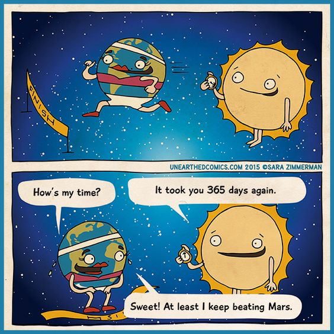
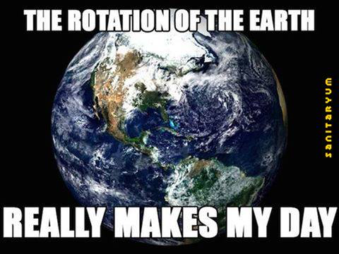
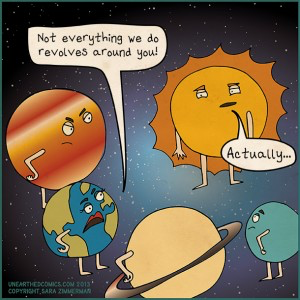
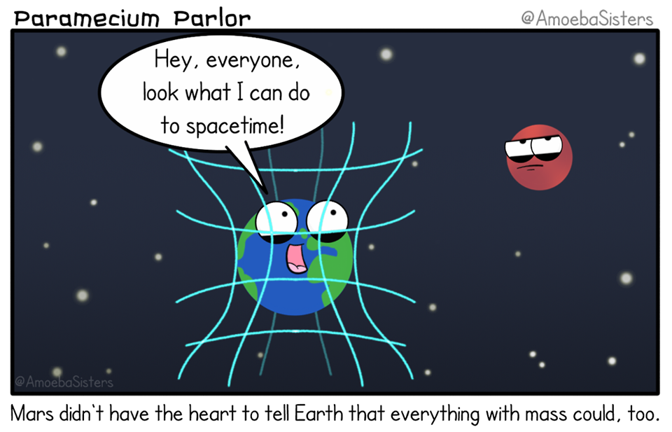

Job 26:7
He stretches out the north over the void and hangs the earth on nothing.
Assignments this week (click me!)
Student Notebook hyperlinks for module 11:
p. 140 in the SNB: link.apologia.com/ECPS2N/11.1 The Comet’s Tale
Required Videos and Links:
The Physics that Tells Us What the Universe is Made Of by BBC Earth
Fabric of the Cosmos Part 1/4: What is space?
Here’s the video we watched in class. The part about Newton's laws and Einstein’s theory of General Relativity (Spacetime) is from 10:14 minutes until about 21:50 minutes.
Optional but Helpful:
Gravitational Force CalculatorThis site will calculate the gravitational force given the masses and distance between the objects. You can see how it changes by choosing massed and distance (like 1 kg, 1kg, and 1 meter) and writing down what the force is. Then, you can change the masses or distances by doubling them, tripling them, etc., and see how the force changes.
NASA's overview of our 8 Planets NASA's overview of the 5 Dwarf PlanetsWhat are gravitons? By Don Lincoln
Vocabulary Flashcards on Quizlet
Module 11 flash cards




